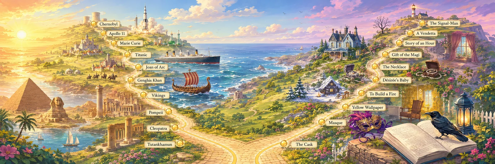

Eighty-nine of the shortest, sharpest stories ever written — a few pages each, and they don't leave you.
Some stories take ten minutes to read and ten years to finish thinking about. This series gathers eighty-nine of them — a fired church verger, a peasant racing the sun for land, a borrowed necklace that costs a decade, a painted leaf that refuses to fall, a signalman haunted by a warning he cannot read — from Chekhov, Poe and Maupassant to Akutagawa, Hurston and Woolf. Two longer reads, Dr Jekyll and Mr Hyde and The Metamorphosis, are told in episodes.
Each one turns on its final sentence. And each becomes a workshop: we read closely, harvest the vocabulary, study one grammar structure the story teaches by example, name the techniques the writer is using, and finish with three timed speaking tasks. The stories belong to no industry and no background — only to anyone who has ever wanted, waited, gambled, or been underestimated.
Stories that turn on their last line.
No blood and no monsters — a knock at the door, a figure on the line, a room nobody will sleep in.
Tall tales, small lies and a very bad day for a thief.
Nothing explodes. Something is quietly lost.
Cold, hunger, enemies and cunning — stories where the next decision matters.
People who give up the thing they most need — and whether anyone notices.
Rooms, doors and hard choices, mostly written by women who knew exactly what they were describing.
Children who see more than the adults around them — and are believed less.
People who bend with the wind, swell with vanity, or wait for permission that never comes.
Land, a bet, a lucky horse, a ticket — and the price each one turns out to carry.
Who gets punished, who gets forgiven, and who decides.
Death keeps appointments, machines stop, and time does odd things.
Every story has an echo in a lesson. Read the story first, then take its idea into a workplace or everyday-English lesson.
No story matches that search. Try a writer’s name, a theme, or a grammar word.
Two whole novellas, each told in episodes you can take one lesson at a time.
Not sure where to start? Six reading paths
Five stories that turn on their last line. Read them in this order and watch yourself get better at seeing it coming.
No blood, no monsters — just a knock at the door, a figure on the line, a room nobody will sleep in.
Land, a bet, a lucky horse, a shop, a banknote — and the price each one turns out to carry.
Five women, five rooms, five doors — written by women who knew exactly what they were describing.
Children who see more than the adults around them — and are believed less.
Read the pair in one week, then argue: which writer gets closer to the truth?
Ten words unlocked first, so the story reads smoothly.
Read it in parts, pausing to discuss as the meaning builds.
One structure the story teaches by example, with practice.
The theme, the twist, and how the writer pulls it off.
Three timed tasks that put it all to work.